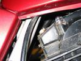

| FRONT | BACK | |
|---|---|---|
| Needle: | 1CE | 3MN |
| Spring: | 16 turn 180 mm | 15 turn 165 mm |
Anyone with input on their favourite jetting, that'd be great.
(Or you could Play with EFI)
It's pretty obvious when it happens ... the head cover won't sit flat on the head even at TDC, because the valve springs are being compressed.
You'd have to be an incompetent prick of a professional mechanic to miss this one, eh?
For some reason, this seems to happen more easily to the exhaust rockers. A gentle push with a screwdriver between the valve-stem end of the rocker and the head cover will realign the eccentrics to face inwards.
The inner springs appear to all be identical.
|  | While it's out, there's a possible modification - drill a hole in the covers above each tensioner, tap it and plug with a screw. If the tensioners stick again, remove the screw and use a tool to press the wedges down. I'm trying this modification myself at the moment ... yep, and it seems to work quite well. The rear cylinder bolt is awful close to the frame rail though, so access there is tricky. But it seems to be my front cylinder one that sticks anyway. |
You can grind flats onto the threaded part either two for an open spanner or six for a ring spanner / socket. It's not as tricky as it sounds because if you hold the 27mm head in a vice, you can turn it one face at a time and thus get the alignment of the sides right. Well, right enough anyway. I ground mine down to 13mm, there's a little thread showing on the corners still but it works fine. If I get overenthusiastic I might finish it off to a proper 12mm on the mill, or just pound a cheapo 13mm 3/8" socket on the end ...
Remember, you don't need much torque to install this part.
Don't forget to vacuum and/or blow out with compressed air to clean all the grit out of the tubes ... otherwise it'll fall into the cylinder and/or cam chain journal.
Steve Jordan writes: Clutch cable got a bit of slack in it and I thought it was the cable seizing up. Got worse within about a hundred klicks [...] Completely stopped disengaging [...] kept going as no apparent other problems. Stopped to rendezvous [...] Roll started and when I put it into third the oil light came on. Went out when I backed off and went on when revved and back off when idling, then on and stayed on. Stopped the bike and trailed it back home. Just pulled it apart and found the centre nut was loose.My reply: Make sure [the clutch] engages properly and the oil pump drive gear pins and the clutch basket holes are still square and not battered to pieces by each other. You'll be able to feel the pins engage the holes. I've never had a problem when that center nut is torqued correctly, but you could loctite it if you're worried. It needs a _lot_ of torque ... 85 - 95 Nm = 62 - 69 ft.lb.
Thanks to Rossco: The exciter coils that charge the cdi's can break down, any bike with more than 30,000 probably has had it done by now. Its an easy to get to part, under the left engine side cover.
These coils are part of the generator, which is under the LHS engine cover. The wiring runs up to under the RHS side cover, and then to the CDI units. There are two coils, each of which should be between 250 and 350 ohms to chassis. With the engine running, there should be a large AC voltage on each, 100VAC-250VAC. Be careful. If they burn out, one or both cylinders run poorly or stop working entirely.
Thanks to BT Humble: You can bodge around the exciter coils by using a mains transformer backwards. see the aus.moto thread "Whale Oil Beef Hooked" if you dare!
From: B. T. Humble Four days without a ride was just getting intolerable, so I had another look at the CDI/Stator problem on The Terrible Vee (CX500). It has high-voltage windings inside the alternator to supply ~100VAC to the CDI, and these must have been designed specifically for the Australian market by a Japanese bloke who was still peeved about losing the war... After a bit of head scratching I retrieved a 240V->12V transformer from my junk box, and piggybacked the 12V winding onto one of the 15VAC charging circuit windings. I then hooked up the 240V winding to the high-voltage input of the CDI, and lit the blue touch paper... Amazingly, it works. At idle (1500rpm) it produces 140VAC which makes for really good starting, however since this transformer was designed for use at 50Hz the secondary voltage drops off rapidly as RPM increases (about 60VAC at 4000RPM), ultimately limiting the engine to around 5500RPM while under load (I think this is due to the inductance of the windings?). Since the secondary transformer winding is rated at 800mA and I was able to ride the bike for about 30km without burning it out (it only got slightly warm), I'd guess it's drawing less than an amp from the alternator, which is the equivalent of adding a 12W light to the electrical load. (I don't have an AC ammeter so I don't know for sure). Looks like a simple inverter will do the job after all, and a lot cheaper than $200 for a secondhand stator or about the same for a rewind. Also I'm not enthusiastic about dropping the motor _again_ to replace the stator, so this'll keep me going for a while. :-) BTH
Mine lasted over 60,000 kms before they finally failed, both at once strangely enough. Oddly enough, when I replaced the coils fuel efficiency went up 25%, suggesting that a hot spark is essential, or something like that anyway.From: sharkey So I tried it. Hulking great transformer from an old power supply, 30VAC windings across the stator, 240VAC windings into the CDI boxes. And the bloody thing worked! Mr B T Humble, should you ever visit Melbourne (eg: the Supers!) I'll buy you at least a large beer or three. I ran it long enough to get me home then changed the stator. The transformer weighed about a kilo and got ... quite warm ... in any case!
Small Coil Rewinds in Geelong has been rewinding these sorts of coils approximately forever, and have done coils for several list members. They'll only do the whole stator, not just the CDI exciter coils though.
Steven J. Curtis writes: "Andy Wheeler in Gosford [...] winds with heavier wire so that they don't burn out but you have less turns and therefore I got the fuel economy problem. He says the honda spec is 3500 turns of X gauge, he winds 3200 turns of the next heaver wire. That was enough on mine to drop the fuel consumption about 3 - 4 k per litre."
Ross Lawrence writes: "[I recommend] Dave Turner [from Queensland] Ph 07 3402 4429. He works from home and does lots of the bike shop work in Brisbane, along with a fair bit of work sent from interstate. Dave also states that the insulation on the winding wire has been upgraded in recent times, apparently the old stuff was only rated to 140 degrees C but the new stuff is good for 200 degrees C. This may help to explain why they failed every so often, on the air cooled motors especially."
Rossco, Steve and I are all thinking of ways to eliminate the damned things. Presumably a DC-DC converter could do the job ... I think they're only drawing about 15W each ...
I did end up trying out an inverter solution, you can read about it at Homebrew EFI -- Ignition!
I made the mistake, and ruined my oil cooler. I bought a replacement from a wreckers ... exactly the same thing had happened to it and they'd welded it up.
If you do need to remove this line, lock a spanner into a vice and use it to hold the octagonal extension out of the bottom of the oil cooler. You can now put torque on the connector without damaging the cooler itself.
Remember, a little WD40 / RP7 / etc goes a long way when dealing with seized threads.
Wheels / Suspension / Final DriveFront BrakeThe front caliper slides on a pair of pins, the pins are meant to be covered in grease, the grease is retained by three little rubber boots. The rubber boots fail every 20-30000km, and the grease gets out, the water gets in, the pins seize and the brakes turn to shit. To fix, disassemble, degrease, remove rust from pins, replace rubber boots w/ new, grease, reassemble. It's no sports bike, but adequate for a 90/90-21 ...Rear BrakeBack brake is rubbish, can be made less worse by fitting new shoes (perhaps slot them with a hacksaw) and adjusting the pull rod setup carefully for maximum leverage.ForksProven Suspension sell replacement progressive forksprings for the XLV.The fork seals are tricky to get back in because the bores they live in are quite deep ... I use a 40x32 PVC pipe joiner, with the ID turned to 44mm and the smaller OD=52mm. If you don't have a lathe handy you could always just file it out, not much needs to be removed. This slips down over the fork leg with the smaller end bearing on the seal, and then I whack it in with a bit of steel pipe slipped over the fork leg. Rear Shockie
Rear Wheel BearingThe larger of the two rear wheel bearings seems to wear out its seat (I've seen this on two XLVs, 65k and 72k, and heard about it from many listmembers), and too much play at this bearing can seriously wear the spline drives. Check it every now and then.
The problem is, once the bearing can move a little it wear the seat a little more ... if left, the problem increases. And then the weight of the bike is supported by the final drive bearings, via the splines. Not good for the splines, which are meant to only take rotational loads, not axial ones. If it's real bad, the rear wheel needs to be machined and a sleeve inserted to fix this problem. This fix seems to have worked well on my XLV -- at least 30,000km have passed. Thanks to Greg Scott:
NOTE: When removing or reinserting bearings, heat the hub to approx 100 °C (eg: so water sizzles gently on the hub). This prevents damage to the aluminium seat and causes the bearing to 'lock' into place. Less worn out bearing seats may be fixable with Loctite 641 ... normal Loctite nutlocker doesn't work, but 641 is designed for the purpose and seems to have worked on my other rear wheel bearing -- the RHS bearing started to spin a few thousand ago. On advice from a local garage, I staked the bearing seat with three circuits of punch marks with a centerpunch, raising many little craters in the aluminium seat. Then I liberally coated the area with loctite 641 and installed the bearing. It seems to work -- the loctite retains the bearing, and the punch marks retain the loctite.
Spline DriveThe spline drive in a shaft-drive bike is quite vulnerable to damage if not looked after ... even more so on an off-road bike where dirt and hard knocks are common.To protect the splines, they should be packed with MoS2 (Molybdenum Disulphide) grease. Get a thick layer of grease all over them, don't be afraid to make a mess! Make sure you don't get grease in the brake drum though ... This grease is retained by 2 O-rings ... one on the base of the Final Driven Flange (attached to the wheel) and the other on an 'O-ring carrier' inside the ring gear splines. Make sure these O-rings are present and in good condition. There are also spline connections at either end of the shaft and the uni joint ... if you remove the final drive, repack these with grease as well, and make sure the rubber seal at the back of the engine is in place correctly. Photos to come ...
Swingarm BearingsThese wear out easily, especially the right hand one for some reason. You can undo the locknut with a pin punch, but getting the pivots out will require a 17mm Allen Key :-(.I ended up drilling, tapping and installing grease nipples in the pivot pins. Then discovered how easily the seals back out, so the seals now have tiny grease outlet holes drilled in them. On the up-side, I can now grease my SA bearings every ride, on the down-side, now I have to do so! Thanks to Rojaws: I reckon the right hand swing arm bearing wears because the seal on the pivot pin is prone to working loose and exposing the bearing to road dirt. I put a garden tie around the neck of the pin and so far no more trouble. Copyright (C) 2001-2004, Nick 'Sharkey' Moore. All Rights Reserved. These Tech Tips are all things I've stumbled upon by trial and error, or heard of from other enthusiasts. I am not a professional mechanic and disclaim all responsibility for the accuracy, safety, legality and/or usefulness of this information. Don't you hate this disclaimer stuff? Got a comment or a contribution? Mail sharkey@zoic.org
|
{kind=link}
{kind=link}
{kind=link}
{kind=link}